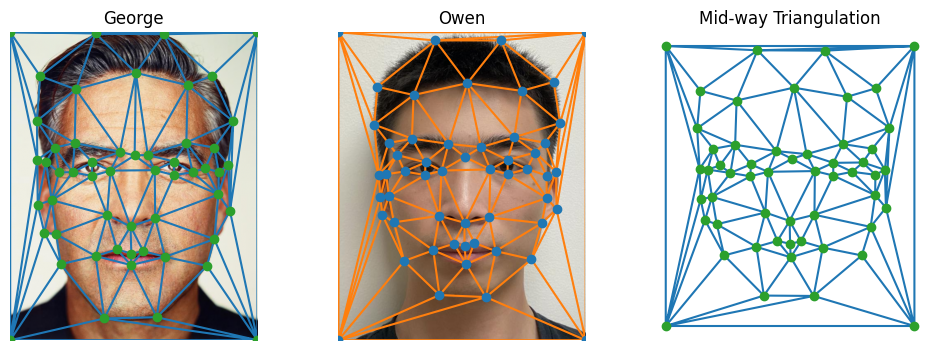
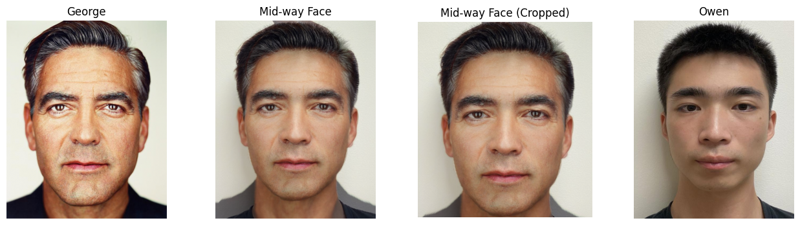
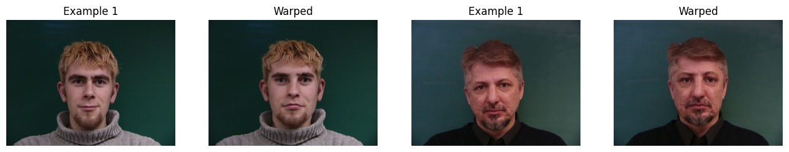
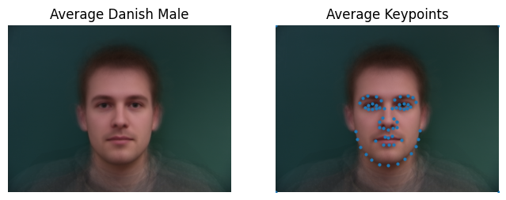
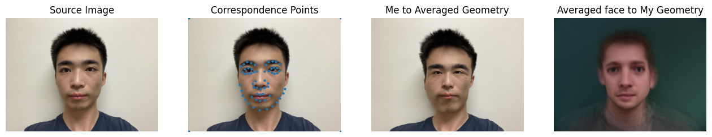
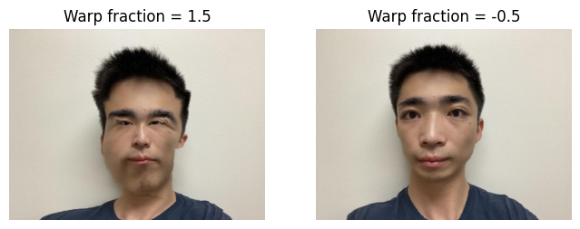

In this project, I will perform a morph animation of my face to George's face. With manually defined correspondence between
images, I can use Delaunay triangulation, inverse affine transformation, and cross disolve for warping. I also compute
the mean of a population of faces and extrapolate from a population mean to create a caricature of myself.
Part 1: Defining Correspondences
Using George's image as the base image, I took an image of myself in a similar position. Then I cropped and rescaled my image to
have the same dimension as George's image. Next, I used the online
tool to select ~40 correspondence points for each image. Finally, I used scipy.spatial.Delaunay to generate a Delaunay
triangulation for each images as well as the midway image.

Part 2: Computing the "Mid-way Face"
Before computing the whole morph sequence, I computed the mid-way face between George and I. I wrote a class
that takes in correspondence coordinates, an image of Geroge, and an image of myself to perform midface calculation.
Compute the midway shape (mean of the two sets of correspondence points)
For each Delaunay triangle
Compute the inverse affine warping matrix from the midway image to the source image to avoid black holes after transformation
Inverse warp all points in the triangle with skimage.draw.polygon to obtain the location after warped
Obtain the color values from interpolation utilizing the function scipy.interpolate.griddata (griddata takes the most time, took me ~30 second for mid image computation)
Cross-dissolve the color by averaging the warped images
Note that the initial mid-way face has some shirt overlays. The shirt overlays and blurring are due to
imperfect alignment between my image and George's. Since the focus of this project is face morphing,
I decided that this minor issue can be overlooked at this stage.

Part 3. The Morph Sequence
To compute the morph sequences to be used in a gif, I made a subclass based on part 2.
Images 'george' and 'owen' are first warped into an intermediate shape configuration controlled by warp fraction,
and then the results are cross-dissolved according to dissolve fraction. I decided to let both parameters lie in
the range [0,1] and used np.linspace(0, 1, 60) for morph sequence with 60 frames and with a fps of 35.
Part 4. The "Mean face" of a population
In this part, I chosed a freely
available dataset of annotated faces that consists of 37 Danish face Images
(30 males, 7 females). In particular, I selected a subset of population (all 30 males) for my mean face analysis.
With the keypoints already annotated on the data, I performed the following steps:
Compute the average face shape by taking the average of the keypoints (same as my correspondence points in part 1)
Morph each of the faces in the dataset into the average shape.
Compute the average face of the population by cross dissolving the morphed faces.
Lastly, I warp my face into the average geometry and vice versa.



Part 5. Caricatures- Extrapolating from the mean
To produce a caricature of your face, I used the population mean in part 4 (average danish male face) and
extrapolate from the population mean. Mathematically, it is simply achieved by choosing a warp fraction
in part 3 to be outside of the normal [0, 1] range. In my examples, I used a warp fraction of 1.5 to look
"more Danish" and a warp fraction of -0.5 to look "less Danish". Although the result is somewhat weird,
one of my observation is that Danish male tend to have a smaller eyes. [Disclaimer: may not be true, could
have been a result from how I choose my correspondence points etc.]

Part 6. Bells and Whistles
For Bells and Whistles, I decided to use the same Dane dataset but this time with a subpopulation of all danish females
in the dataset. In particular, I want to change the gender of my face by morphing into the average danish female face.
The outputs below demonstrate 3 types of morphing (dissolve fraction = 0.5):
Morphing just the shape: Warp my face into the average danish female face
Morphing just the appearance: Warp the average danish female face into my face and cross-dissolve
Morphing both the shape and the appearance: Take the shape morph image of my self and cross-dissolve with
the original average danish female face.
{kind=link}